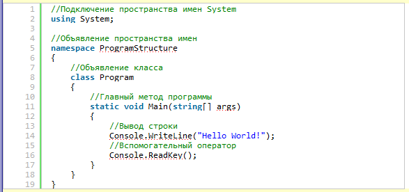

| Тема 3. Структура программы С#. | ||
| Назад | ||
|
Программа, написанная на C# состоит из следующих блоков:
Пример простейшей программыДавайте рассмотрим простейшую программу, написанную на C#. Это будет консольное приложение, выводящее строку «Hello World» (своего рода классика, для первой программы в практике программиста). Код такой программы приведен ниже, давайте рассмотрим его:
 Первая строка данной программы, это комментарий. Комментарии никак не влияют на работу программы, они нужны для человека, который будет сопровождать код программы (дорабатывать её, исправлять ошибки и т.п.). Вторая строка программы (using System;) является оператором, который подключает стандартное пространство имен System. По сути, мы получаем доступ к набору классов имеющихся в «контейнере» System. Как видно, данная строка состоит из двух слов, первое (ключевое слово using) означает, что мы хотим подключить пространство имен, а второе System — название нужного пространства имен. В конце второй строки стоит символ «;», который обозначает завершение оператора. Каждый оператор программы должен заканчиваться таким символом. Четвертая строка программы снова является комментарием, ровно как и строки 7, 10, 13, 15. Комментарии в C# начинаются с символов «//» (две косые черты, два слэша), и действуют только до конца строки. В C# есть и многострочные комментарии, иногда удобнее использовать их, мы еще столкнемся с ними. В пятой строке (namespace ProgramStructure) объявляется своё пространство имен, оно называется «ProgramStructure». Пространство имен является своего рода контейнером, и оно ограничивается фигурными скобками (открывающей — строка 6 и закрывающей — строка 19), следующими за его названием. Таким образом, все что находится между строками 6 и 19 принадлежит пространству имен ProgramStructure. В строке 8 объявляется класс с именем «Program», это основной и единственный класс нашей программы. Как можно заметить, для объявления класса служит ключевое слово class за которым следует имя класса. В программе, может быть и не один, а несколько классов. Как правило, класс состоит из набора методов, которые определяют так называемое поведение класса (если хотите, функциональность). Границы класса, так же как и пространства имен обозначаются фигурными скобками (строки 9 и 18). В нашем случае, класс имеет только один метод, это метод Main. В строке 11 как раз и объявляется метод Main. Этот метод является главным в нашей программе, так называемая точка входа в программу. Это означает, что при запуске программы, первым будет выполняться именно метод Main. Каждый метод тоже имеет границы, которые так же обозначаются фигурными скобками (строки 12 и 17). Метод Main нашей программы содержит только два оператора. Эти операторы значатся в строках 14 и 16. Первый выводит сообщение «Hello World!». А второй, является вспомогательным, он заставляет программу ждать нажатие клавиши на клавиатуре, и не дает её до этого момента завершить свое выполнение (без этого оператора, программа бы вывела строку и быстро закрылась, так что мы даже не успели прочитать что она вывела). А теперь попробуйте собрать и запустить это программу в Visual Studio. Для этого нужно:
|
||
| Конспект подготовлен Бакулиным А. М. 2022 год. | ||